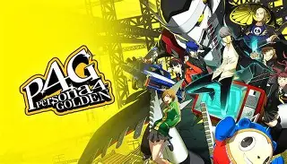
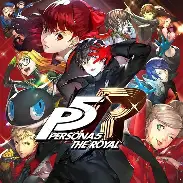
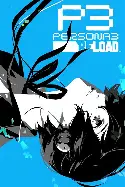
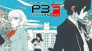
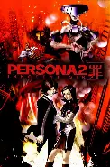

-
Persona 4 Golden

Known for its strong character relationships, small-town mystery, and emotional storytelling.
-
Persona 5 Royal

A stylish and polished version of Persona 5 with new characters, improved gameplay, and additional story content.
-
Persona 3 Reload

A modern remake that updates visuals and gameplay while keeping the series’ darker themes.
-
Persona 3 FES

An expanded version of Persona 3 that introduced important story additions and gameplay refinements.
-
Persona 2: Innocent Sin

A classic entry with heavy psychological themes and a unique story compared to later games.